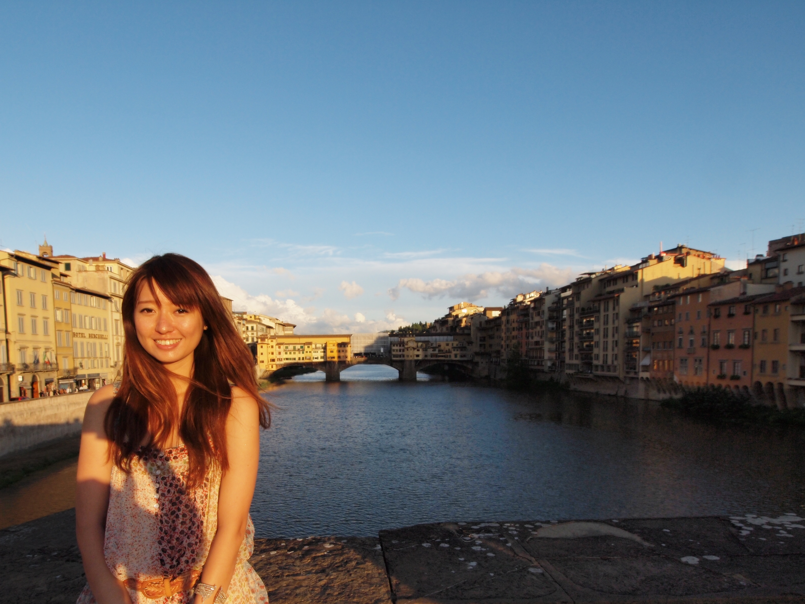

A problem solver, user-centric thinker, with some fun

As a previous digital marketer in Ogilvy, the largetest communication digital agency,
I truly realized that a core part of every business is true understanding of users’ perspectives
and how to
incorporate them into strategic business decisions.
In this sense, I believe User Experience Design is
all about strategic and creative problem-solving in
our everyday lives.
With keen insight, business acumen, and
analytical communication skills, I am striving
to become a User Experience designer who can design to empower people,
toward the betterment of our society.
In my free time, I love traveling, finding insights out of unrelated surface and sharing ideas with people.
I am fascinated by ideas, and drawn into crafting new perspectives on familiar challenges, as well as making profound impacts on the challenges through these novel ideas.
Currently, I am actively seeking a
User Experience internship
for Summer 2019.
Please get
in touch!